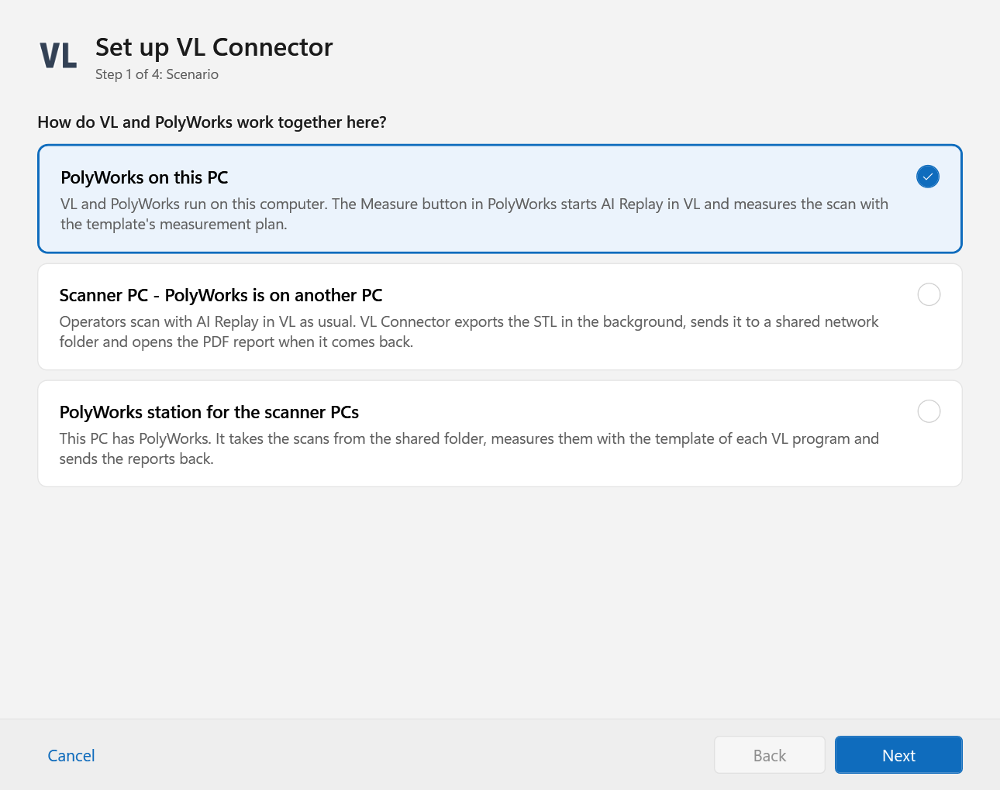
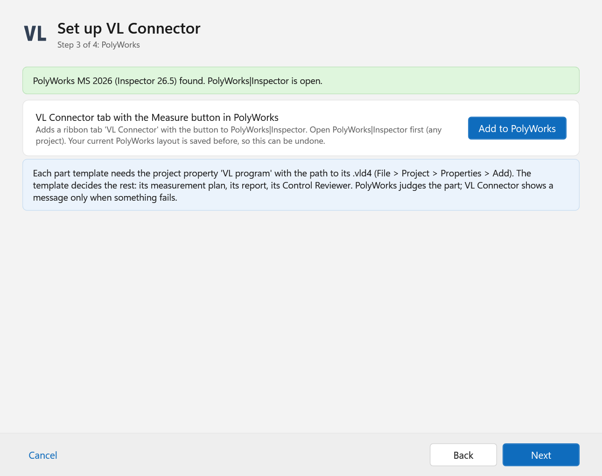
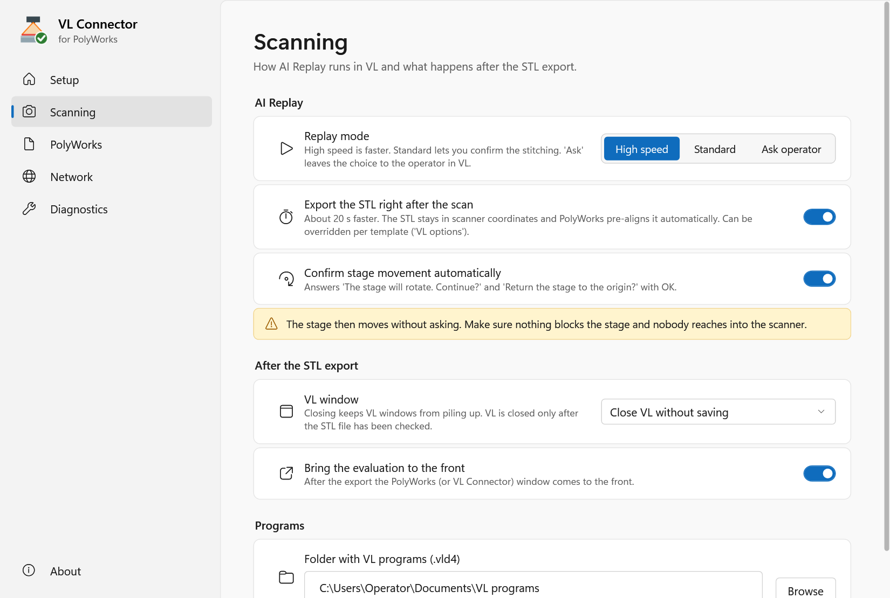

VL Connector for PolyWorks
Measure KEYENCE VL-800 scans in PolyWorks|Inspector with one button. Scan the part in the VL Application with AI Replay as usual; the STL is exported automatically and PolyWorks measures it by the part's template - its report (PDF) and its Control Reviewer show the result.
Unofficial tool. It is not an official KEYENCE or InnovMetric product and is not covered by their warranty or support. KEYENCE, VL-800 and PolyWorks are trademarks of their respective owners.

What it does
For each part, a PolyWorks template is the measurement plan: the CAD, one data object for the scan, the controls, a measurement sequence (alignment and measurement), optionally the report and a piece template. VL Connector adds every scan as a new piece of the template, puts the scan into its data object and lets PolyWorks play the plan (Play Inspection). PolyWorks judges the part, as the template is designed; VL Connector adds no alignment, measurement, report or verdict of its own and only speaks up when something fails.
Two ways to work
| Scenario A: PolyWorks on the scanner PC | Scenario B: PolyWorks on another PC | |
|---|---|---|
| Start | Measure button in PolyWorks (the template knows its VL program) | AI Replay in VL as usual - VL Connector waits in the notification area |
| Scan | AI Replay in VL, STL exported automatically | the same; the STL is named after the .vld4 program plus date and time |
| Measurement | in the same PolyWorks | a PolyWorks station takes the STL from a shared network folder and picks the template by the VL program |
| Result | the template's report as PDF, opened automatically; the piece stays open in PolyWorks | the PDF comes back and opens only on the PC that scanned the part |
Screenshots


Requirements
- Windows 10 or 11, Windows PowerShell 5.1.
- KEYENCE VL-800 with VL Application 4.6 (tested: 4.6.1.6002), English user interface.
- PolyWorks Metrology Suite 2026 (Inspector) on the evaluating PC.
- Scenario B: a shared network folder.
- Administrator rights for the installation, not for using it. Nothing is copied into the program folders of VL or PolyWorks.
Install
- Download the ZIP from the latest release and check its SHA-256 against
SHA256SUMS.txt. - Extract it and run Install.cmd (installs to
C:\Program Files\VLConnector). - The setup wizard asks for the scenario and adds the VL Connector tab to PolyWorks|Inspector.
Documents
- User guide: setup, part templates, the Measure button, the network scenario, troubleshooting.
- Notes for IT: what runs, which Windows interfaces are used and why, files, permissions.
- Protocol: files exchanged between VL Connector, PolyWorks and the station.
- Acceptance checklist: tests at the scanner before production use.
- Changelog
License
Free and open source under the MIT license. Everything is plain, readable PowerShell, PolyWorks macro (MSCL), XAML, JSON and C# source.